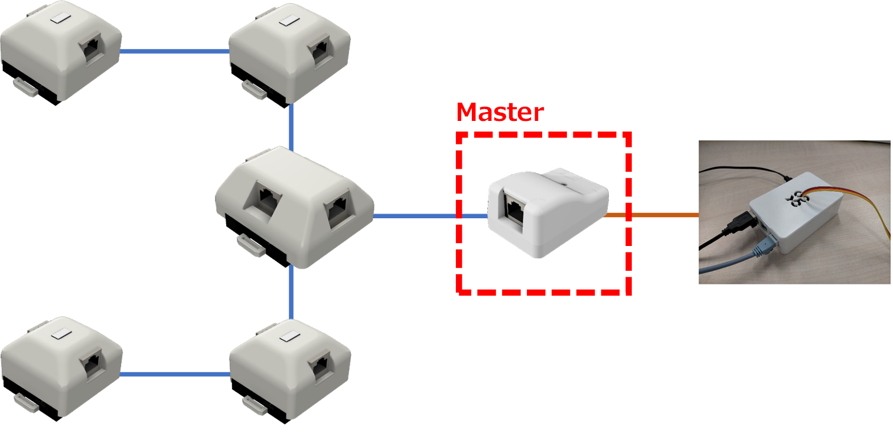
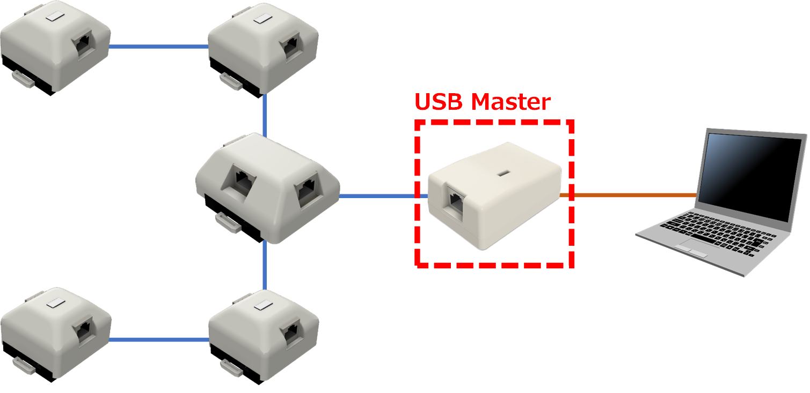

1.概要
Grid-EYEシステムは、ラズパイをセンサ端末とし、各モジュールを組み合わせて接続することでシステムを構成している。
各モジュールは、Masterモジュールを介しラズパイと接続している。
MasterモジュールはラズパイのGPIOピンに直接に接続しており、そのままでは、GPIOピンのない一般的なPCをセンサ端末とすることはできない。
- システム構成

USB-Masterモジュールは、GPIOピンによるインタフェースをUSBに置き替えたモジュールであるため、PCをセンサ端末にすることが可能になる。
- システム構成（USB Masterモジュール使用）
